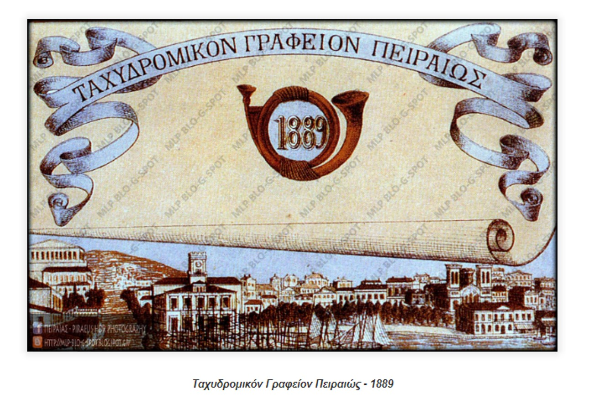

Από τον Ιανουάριο του 2014 στο Παλιό Ταχυδρομείο της οδού Φίλωνος 29 – Καραολή και Δημητρίου 14 στον 1ο όροφο, εκτίθεται μικρός αριθμός έργων νεοελλήνων ζωγράφων μεταξύ αυτών Νικόλαος και Περικλής Λύτρας, Κων/νος Μαλέας, Κων/νος Ρωμανίδης, Μιχαήλ Οικονόμου, Αλέξανδρος Χριστοφής και έπειτα από συστηματική μελέτη, τεκμηρίωση και συντήρηση από εξειδικευμένο προσωπικό, ανά τακτά χρονικά διαστήματα γίνεται ανάρτηση έργων νεότερων καλλιτεχνών εκ των οποίων σημαντική θα είναι η παρουσία των πειραιωτών ζωγράφων.Στη Δημοτική Πινακοθήκη υπάρχει η συλλογή 80 γλυπτών του Γεωργίου Καστριώτη, συλλογή 156 έργων του Σταμάτη Λαζάρου, σημαντικά έργα των Βυζαντίου, Γεραλή, Κοκότση,, Βολανάκη,, κ.α. καθώς και πλούσιο υλικό του Μάνου Κατράκη. Το κτίριο ανεγέρθηκε το 1889 ως ταχυδρομείο, ένας χώρος πνευματικής συνά- ντησης των ανθρώπων. Η απόσταση και η ξενιτιά για τον Πειραιά είναι έννοιες γηγενείς. Στο παλιό ταχυδρομείο ενώνονταν οι ξενιτεμένοι και οι ναυτικοί με τις οικογένειές τους. Σήμερα o χώρος φιλοδοξεί να αποτελέσει Πνευματική εστία συνάντησης παλαιών και νέων καλλιτεχνών με τους κατοίκους της πόλης. Το κτίριο αποτελεί έναν από τους νεοκλασικούς αρχιτεκτονικούς προορισμούς της περιοχής.
